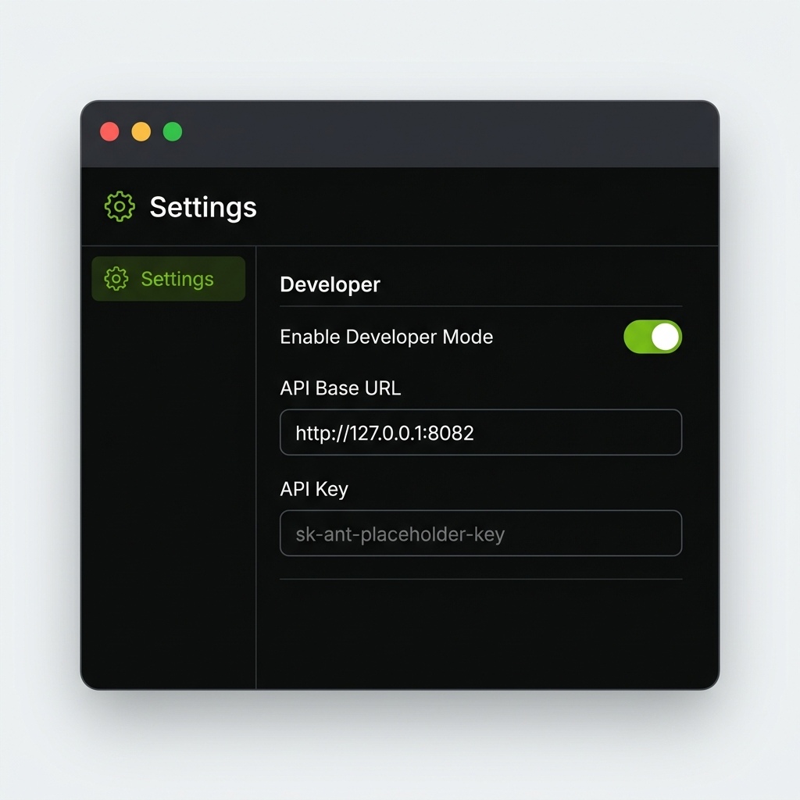

This application serves as a completely seamless, native macOS wrapper for your local Claude proxy.
Features:
Enter your NVIDIA NIM API key. This key authenticates all model requests through your local proxy.
build.nvidia.com → Sign in → API Keys to generate your free key.
Fetch and assign NVIDIA NIM models to each Claude slot. Click a model, then click the assign button.
Would you like Nvidia NIMS to automatically start whenever you log into your Mac?
Highly recommended so your proxy is always available without manual intervention.
Connect the official Claude Desktop app to your local NIMS proxy.
Download and install the official Claude Desktop app for macOS.
⬇ Download Claude Desktop for macOSLaunch Claude Desktop. Click Claude in the menu bar → Settings... or press ⌘ ,
In Settings, find the Developer tab. Toggle "Enable Developer Mode" ON to reveal the Gateway settings.
In Developer settings, enter the API Base URL:
"Stop talking to the internet. Send all requests to the local NIMS proxy."
Enter the authentication token that the NIMS proxy recognizes:
freecc is the auth token the proxy expects. Your NVIDIA key is configured separately.Your Developer settings should look like this:

For Claude Code CLI or VS Code extension: